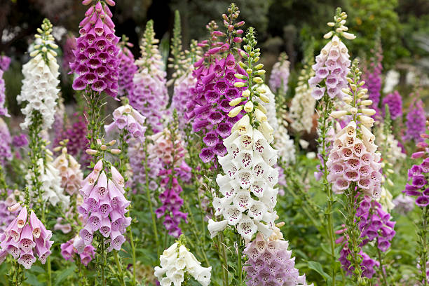

Meaning: Riddles, Secrets
Origin
Foxglove has long been associated with fairy folklore in the British Isles. Its name may have been “folkglove” originally, as fae folk—or fairies—were said to hide within its blooms. Children who wished to see the fairies and hear their riddles would peer inside these flowers. Picking a foxglove, however, was thought to be bad luck, as it robbed the fairies of their homes; this rumor may have begun to keep children from touching these blooms, which could be deadly if consumed.
Gallery
